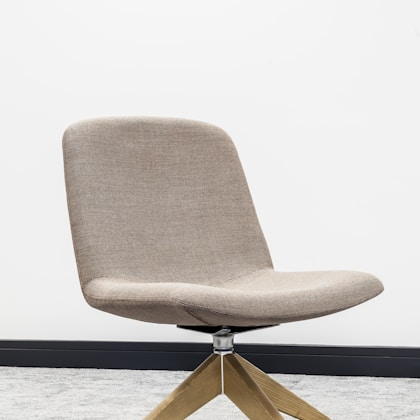
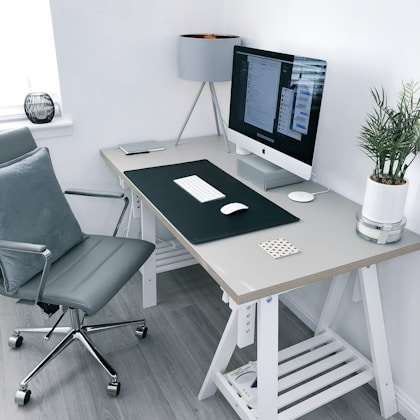
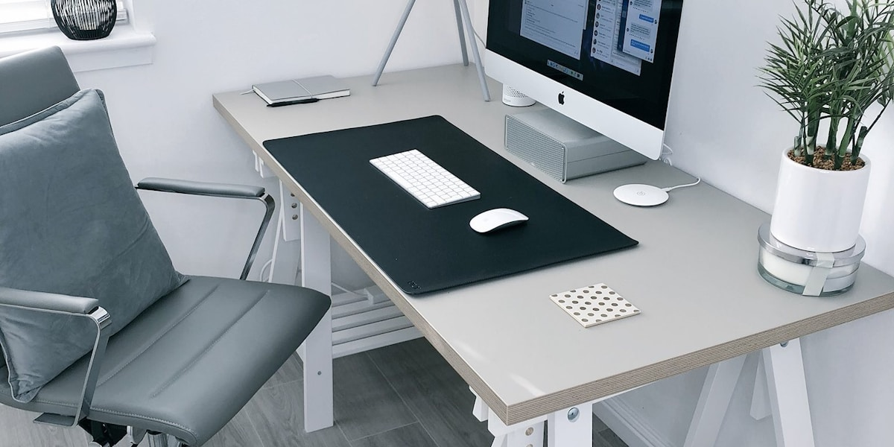

A good office chair should disappear under you. If you are thinking about it all afternoon, something is wrong. The best chairs under $500 usually skip luxury upholstery and showroom drama, but they can still offer proper seat support, arm adjustment, recline control, and enough durability for a serious home office. The trick is avoiding chairs that look ergonomic in photos while giving you very little control over fit.
Our top recommendation is the Branch Ergonomic Chair because it gives most home-office users the strongest balance of adjustability, warranty, price, and clean design. It has adjustable lumbar support, height-adjustable arms, seat-depth adjustment, and a recline system that feels more controlled than many budget chairs. It is not perfect for every body type, but it is one of the safest sub-$500 buys for people who want a proper task chair without entering premium Herman Miller or Steelcase pricing.
If you want a breathable mesh chair with more adjustment, the HON Ignition 2.0 is the practical alternative. If you want a chair that feels closer to a traditional cushion seat, the Steelcase Series 1 is often available near the top of this price range and has a stronger brand support story. For a lower-cost pick, the Staples Hyken can work for smaller and average-size users, but it is not the chair we would choose for larger bodies or long eight-hour days.

Branch Ergonomic Chair
The safest recommendation for most home offices: adjustable lumbar support, seat-depth adjustment, clean styling, and a fair price.
Typical street price: $329 to $399
HON Ignition 2.0
A breathable, practical chair with a strong adjustment set and a business-furniture feel that suits long work sessions.
Typical street price: $330 to $460

Steelcase Series 1
A compact chair from a major office-furniture brand, with flexible back support and better parts support than most budget competitors.
Typical street price: $400 to $500
Staples Hyken
A popular low-cost mesh chair for smaller workspaces and shorter sessions. It is not as durable or adjustable as our top picks.
Typical street price: $130 to $220
Real product parameters
| Model | Seat height | Weight capacity | Key adjustments | Warranty | Best fit |
|---|---|---|---|---|---|
| Branch Ergonomic Chair | About 17 to 21 in. | Up to 275 lb | Seat height, seat depth, lumbar, tilt, tilt tension, arm height | 7 years | Most average-size home-office users |
| HON Ignition 2.0 | Varies by configuration, commonly about 17 to 22 in. | Up to 300 lb on many task models | Seat slide, arm options, synchro-tilt, lumbar on selected versions | Limited lifetime coverage on many components | Warm rooms and users who want mesh support |
| Steelcase Series 1 | About 16.5 to 21.5 in. | Up to 400 lb | Seat depth, arm options, lumbar, recline tension | 12 years on many parts | Compact offices and buyers who value parts support |
| Staples Hyken | About 17.2 to 20.9 in. | Up to 275 lb | Seat height, tilt lock, arm height, headrest height | Limited 7-year Staples warranty | Smaller users and tighter budgets |
Numbers matter more in chairs than people expect. Seat height decides whether your feet rest flat. Seat depth decides whether the front edge presses behind your knees. Arm adjustment decides whether your shoulders creep upward while typing. A chair with one missing measurement can be a poor fit even if every review says it is comfortable.
Fit matters more than marketing
The chair that looks most ergonomic is not always the one that fits your body. A tall backrest, sculpted lumbar pad, or dramatic mesh frame can be useful, but only if the seat height, seat depth, and arm position match how you actually sit. We prefer chairs that give you a few practical adjustments over chairs that lock you into one posture and call it healthy.
Shorter users should be careful with deep seats and tall minimum heights. If your feet do not reach the floor, you will slide forward or tuck your legs, which ruins the chair鈥檚 support. Taller users should check backrest height, seat depth, and whether the armrests rise high enough. A chair can have a high weight rating and still feel too small for a tall person if the seat pan is short.
What to look for
Prioritize seat depth, armrest adjustment, recline tension, and return policy. A chair can look ergonomic and still fit you badly. If you are shorter than average or taller than six feet, check seat-height range before anything else. If you use a keyboard tray or a thick desktop, arm height becomes especially important because unsupported shoulders are one of the first things people notice after a long day.
| Feature | Why it matters | What to avoid |
|---|---|---|
| Adjustable arms | Reduces shoulder strain during typing | Fixed arms that hit your desk edge |
| Seat depth | Prevents pressure behind the knees | Deep seats for shorter users |
| Recline tension | Lets the chair support movement | Backrests that spring forward too aggressively |
| Warranty | Cheap cylinders and arm pads fail first | Unknown brands with vague parts coverage |
Why return policy matters
Return policy matters in this category more than in almost any other office product. You can judge build quality from photos, but you cannot judge pressure points until you sit for several hours. If a retailer makes returns expensive or complicated, the discount has to be exceptional before we consider it a good buy. A chair is personal enough that a generous return window is part of the product, not a nice extra.
If possible, keep the box until you are sure. Sit in the chair for full work sessions, not just a few minutes after assembly. Try it while typing, reading, leaning back during a call, and moving between desk and keyboard. A chair that feels supportive during a five-minute test can become stiff by lunch. A chair that feels unusual at first can also become comfortable once you adjust seat depth and recline tension correctly.

Durability and warranty notes
Budget office chairs often fail in predictable places: gas cylinders, arm pads, casters, and tilt mechanisms. We look for replacement parts, published warranty terms, and owner comments after six months or more. A chair that feels excellent for two weeks but develops wobble quickly is not a bargain. This is why established office-furniture brands can be worth paying for even when the design looks less exciting.
Mesh is not automatically more durable than foam. Cheap mesh can sag, while cheap foam can flatten. Better mesh chairs use a supportive frame and enough tension to keep the seat or backrest from feeling like a hammock. Better foam chairs use denser foam that does not collapse after a few months. At this price, you are usually choosing between breathability, cushion softness, and adjustment range rather than getting everything at once.
Who should upgrade
If your chair wobbles, makes your hips ache, or leaves your shoulders tight by lunch, replacing it is not a vanity purchase. It is the piece of work gear you use more than your laptop bag, headphones, or desk lamp. A better chair will not fix a bad desk height or poor posture on its own, but it can remove one major source of daily discomfort.
People who work from home three or more days a week should be more demanding than occasional users. If you sit for six to eight hours, spend less attention on style and more on adjustability. If you only use a desk for bills and short calls, a cheaper chair may be fine. The value of a chair depends on hours of use more than the price tag alone.
Setup tips after delivery
Start with seat height. Your feet should rest flat or on a footrest, with your knees roughly level with your hips. Then adjust seat depth so you can fit a few fingers between the seat edge and the back of your knees. Set armrests so your shoulders can relax while your elbows sit near your sides. Adjust lumbar support last, because it should support your lower back without shoving you forward.
Do not lock the chair upright all day. A good task chair should allow small movement. Recline tension should be firm enough that you feel supported, but loose enough that you can lean back without fighting the chair. If the chair has a headrest, use it only if it supports your head naturally. A badly placed headrest can push your neck forward and make a decent chair feel awful.
Who should skip these chairs
Skip sub-$500 task chairs if you need specialty ergonomics, unusual sizing, or all-day support for a medical condition. In that case, a higher-end chair with more configuration options may be smarter. Also skip bargain chairs with no real warranty if you cannot easily replace them. The cheapest chair can become expensive if it fails after a year and cannot be repaired.
Used and refurbished chairs
One reason sub-$500 shopping is tricky is that used premium chairs sometimes compete with new midrange chairs. A used Steelcase Leap, Amia, or Herman Miller Aeron can be a better chair than many new options if it is in good condition. The risk is that cylinders, arm pads, casters, and fabric may already be worn. If you buy used, inspect the chair in person when possible, check for wobble, test every adjustment, and make sure the seat does not feel flattened.
Refurbished chairs can be a smart middle path if the seller replaces worn parts and offers a real return policy. Do not assume refurbished means rebuilt. Some sellers clean a chair and call it refurbished. Others replace cylinders, casters, arm pads, and fabric. The difference matters. For buyers who want less risk, a new Branch, HON, or Steelcase Series 1 with a clear warranty is easier to recommend.
 Best Air Purifiers
Best Air Purifiers Best Coffee Makers
Best Coffee Makers